Capítulo 12. Visualización de datos
▶ Ejecutar este capítulo en Binder
La primera vez que se abre, Binder construye el entorno en la nube (unos 10-20 min); verás una pantalla de progreso. Después queda en caché y abre en segundos. Si parece que no responde, espera a que termine de construirse o vuelve a intentarlo.
Un gráfico es un argumento. Bien hecho, revela de un vistazo una estructura que ninguna tabla deja ver; mal hecho, miente sin que su autor lo pretenda. Por eso la visualización no es la decoración final del análisis, el barniz que se aplica cuando los números ya están: es, a la vez, una herramienta de pensamiento —para explorar, para descubrir qué hay ahí— y una herramienta de comunicación —para convencer, para que otro vea lo que nosotros hemos visto—. Las dos exigen criterio, y no basta con saber llamar a una función de dibujo: la misma orden puede producir un gráfico que aclara o uno que engaña. Esos dos usos —explorar y comunicar— recorren todo el capítulo y no piden lo mismo. El gráfico exploratorio es para uno mismo: rápido, feo si hace falta, hecho para descartar hipótesis por docenas. El gráfico de comunicación es para otro: pulido, anotado, con una sola idea puesta en primer plano. Confundirlos —publicar un borrador o adornar una exploración— es una de las torpezas más comunes, y por eso el capítulo termina justamente en ese paso (§12.8).
El cap. 11 se cerró con una consigna —ver antes de creer—: ningún resumen numérico, por honrado que sea, sustituye a mirar los datos. Lo enseñaron el cuarteto de Anscombe y el datasaurus, cuatro (o trece) conjuntos con la misma media, la misma varianza y la misma correlación, y formas por completo distintas. Aquel capítulo lo contó; este lo dibuja (§12.4). Y toma en serio la consigna hasta el final, porque un gráfico también es un dato que se publica: si puede revelar una estructura oculta, también puede fabricar una que no existe. De ahí el orden de este capítulo, deliberado: primero los principios, después las herramientas. Quien aprende antes la función que el criterio produce gráficos vistosos y falsos con la misma facilidad con que produce buenos.
El plan es este. Empezamos por los principios de percepción y honestidad (§12.1). Luego cogemos la herramienta fundacional, el modelo de objetos de matplotlib (§12.2), y con ella recorremos las tareas por temática: comparar cantidades (§12.3), mirar la forma de una distribución (§12.4) y estudiar la relación entre variables y el perfil de un rasgo sobre una escala ordenada (§12.5). Damos un paso de abstracción con la gramática de gráficos (§12.6), levantamos la vista al estado del arte hasta 2026 —lo declarativo, lo interactivo, lo generado por modelos de lenguaje— (§12.7), volvemos a bajar para aprender a comunicar (§12.8) y cerramos con un caso integrador que mira el catálogo musical desde cuatro ángulos (§12.9). Con este capítulo se cierra la Parte IV; el aprendizaje automático del cap. 13 empezará dando por sabido que sus resultados habrá que verlos, no solo tabularlos.
Principios: percepción, proporción y honestidad
Antes de cualquier biblioteca conviene fijar los principios, porque son los que deciden si un gráfico funciona, y son independientes de la herramienta que lo dibuje. Se resumen en tres preguntas: ¿elegimos la forma que el ojo lee con más precisión?, ¿respetan las proporciones lo que dicen los datos?, ¿puede leerlo todo el mundo? Percepción, honestidad y accesibilidad. Las vemos en ese orden. Quien quiera el tratamiento completo tiene dos referencias modernas y asequibles: Fundamentals of Data Visualization de Wilke (Wilke 2019), disponible en abierto, y Now You See It de Few (Few 2009); aquí destilamos lo imprescindible para no engañarnos ni engañar.
La jerarquía de la percepción
La primera decisión de un gráfico —qué canal visual usamos para representar cada número: posición, longitud, ángulo, área, color— recibe el nombre de codificación (encoding) visual, y no todas las codificaciones se leen igual de bien. En un estudio ya clásico, Cleveland y McGill (Cleveland y McGill 1984) midieron con qué precisión juzgan las personas magnitudes representadas de distintas maneras, y ordenaron los canales del más exacto al menos exacto: mejor que nada la posición sobre una escala común; después la posición sobre escalas no alineadas; luego la longitud; a continuación el ángulo y la pendiente; y al final, ya con error grande, el área, el volumen y el color o la saturación. La razón última es que juzgar una posición contra una referencia fija es una tarea que el sistema visual resuelve casi sin esfuerzo, mientras que estimar un ángulo o comparar dos áreas exige un cálculo aproximado y sesgado. La lista tiene una consecuencia práctica incómoda: el gráfico de tarta (pie chart), que pide comparar ángulos y áreas, cae en la mitad mala de la escala, mientras que un simple gráfico de barras, que compara posiciones y longitudes, cae en la mejor. Casi siempre que dudemos entre una tarta y unas barras, ganan las barras; la tarta solo se defiende cuando las porciones son muy pocas y muy dispares, y aun así unas barras rara vez pierden.
La figura 12.1 lo pone a prueba con un experimento mínimo: la misma información —cuatro cantidades casi iguales— dibujada de tres maneras. En el panel de posiciones (puntos sobre un eje común) ordenamos y comparamos las cuatro de un vistazo; en el de longitudes (barras) todavía se puede, con algo más de esfuerzo; en la tarta, las diferencias se disuelven en un puñado de sectores de ángulo casi idéntico y hay que entornar los ojos para adivinar cuál es mayor. Es exactamente el orden que predice Cleveland-McGill, y conviene subrayar la moraleja: elegir la codificación es la primera decisión de un gráfico y la más importante, porque ninguna elección posterior —colores bonitos, tipografía cuidada— rescata a una codificación mal escogida.
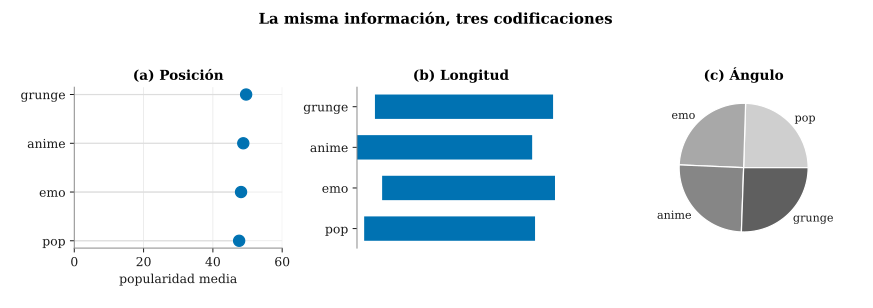
src/cap12_visualizacion.py.Proporción y honestidad
Una codificación bien elegida todavía puede mentir si la escala la traiciona. La honestidad de un gráfico empieza por sus ejes: deben representar las proporciones que hay en los datos, sin encogerlas ni inflarlas. Tufte (Tufte 2001) dio nombre y medida a la distorsión con el factor de mentira (lie factor): el cociente entre el tamaño del efecto que muestra el gráfico y el tamaño del efecto que hay en los datos. Vale 1 cuando el dibujo es fiel; cuanto más se aleja de 1, más exagera (o más disimula).
El engaño clásico es truncar el eje vertical, empezarlo por encima de cero para que una diferencia pequeña parezca enorme. La figura 12.2 lo muestra sin adornos: la popularidad media de dos géneros, pop 47,6 y emo 48,1, una diferencia real de apenas el 1,2 %. En el panel de la izquierda, con el eje arrancado en 46,6, una barra casi duplica a la otra y el ojo lee una brecha enorme: la exageración ronda las cincuenta veces (un factor de mentira \(\approx 50\)). En el de la derecha, con el eje anclado en cero, las dos barras son prácticamente idénticas, que es la verdad. El mismo dato produce dos mensajes opuestos, y lo único que cambia es dónde empieza el eje. (Que pop y emo apenas difieran en popularidad media es una coincidencia de estos datos (maharshipandya 2022); aquí viene bien, porque deja el efecto del eje aislado y desnudo.)
La segunda fuente de distorsión no falsea las cifras, sino que las entierra bajo el ornamento. Tufte llama basura gráfica (chartjunk) a la tinta que no transmite información: los efectos tridimensionales, las rejillas densas, los degradados, las sombras, las texturas de relleno. No engañan como el eje truncado, pero cansan al lector y le esconden la señal. La regla es de economía: cada elemento de un gráfico ha de ganarse su sitio explicando algo del dato; lo que no explica nada, sobra. No se trata de un ascetismo gratuito —una rejilla tenue puede ayudar a leer un valor— sino de un criterio: ante la duda, quitar. La figura 12.3 junta esta lección con la anterior. Clasificamos las pistas según su popularidad —baja, media, alta y muy alta, con cortes en 25, 50 y 75— y representamos las mismas cuatro proporciones, 39,0 %, 36,7 %, 22,2 % y 2,1 %, de dos formas. A la izquierda, una tarta —atenuada a propósito— obliga a comparar ángulos: ¿la franja «baja» es de verdad mayor que la «media», o son casi iguales? A la derecha, las mismas cifras en barras ordenadas de mayor a menor se leen y se comparan sin esfuerzo, y de paso el orden mismo comunica. Vuelve a asomar la jerarquía de la percepción: posición sobre ángulo, siempre que se pueda.
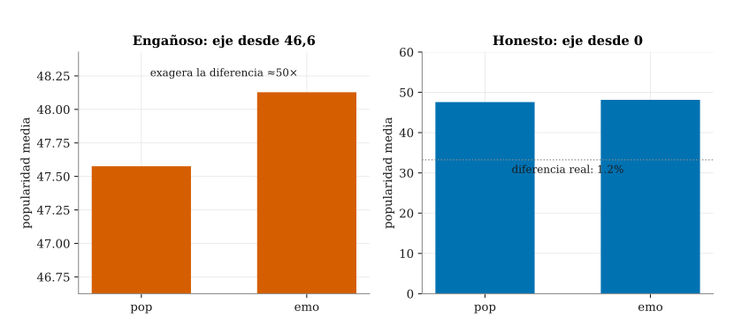
src/cap12_visualizacion.py.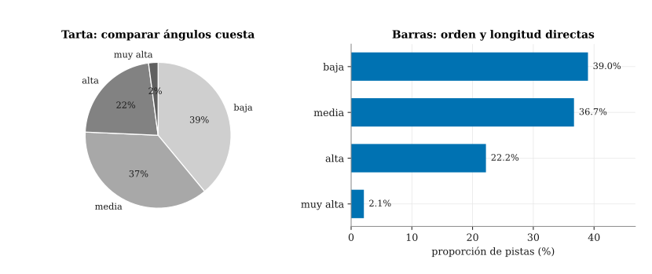
src/cap12_visualizacion.py.Accesibilidad
Un gráfico honrado también ha de ser legible para quien lo mira, y no todos vemos igual: una fracción nada despreciable de la población no distingue ciertos pares de colores, sobre todo el rojo y el verde. Un gráfico que apoya toda su información en esa distinción deja fuera a esas personas. Por eso este libro adopta en todas sus figuras la paleta Okabe-Ito, ocho colores diseñados dentro del Color Universal Design para ser distinguibles por personas con daltonismo (Okabe y Ito 2008) y popularizados en la práctica científica por Bang Wong en Nature Methods en 2011. Tiene dos virtudes que la hacen un buen valor por defecto: sus ocho colores se separan bien para casi cualquier tipo de daltonismo y, como se diseñaron con luminancias distintas, siguen distinguiéndose cuando el gráfico se imprime en escala de grises.
Aun con una buena paleta, el color no debe ser nunca el único canal que porta la diferencia. La regla es la doble codificación: acompañar el color con otra señal redundante —la forma del marcador (círculo, triángulo, cuadrado), el trazo de la línea (continuo, discontinuo)— de modo que el gráfico siga leyéndose si el color se pierde, ya sea por daltonismo, por una fotocopia o por un proyector descolorido. Una serie que se distingue a la vez por color, por forma de marcador y por posición en una leyenda ordenada es robusta; una que solo se distingue por color es frágil, y su fragilidad no se nota hasta que alguien no puede leerla.
Conviene deshacer aquí un malentendido extendido, porque es fácil darlo por bueno y equivocarse. Es cierto que el mapa de color continuo por defecto de matplotlib, viridis, es apto para daltónicos y perceptualmente uniforme; se diseñó justamente para eso. Pero de ahí no se sigue que los colores por defecto de matplotlib sean accesibles en general: el ciclo categórico por defecto —tab10, el que asigna un color a cada serie— no es seguro para el daltonismo. Que viridis lo sea no exime de elegir bien los colores de las categorías: hay que optar de forma explícita por una paleta como Okabe-Ito o tableau-colorblind10. De ahí que todas las figuras de este capítulo se generen con un mismo módulo de estilo, src/cap12_estilo.py, que fija la paleta Okabe-Ito una vez y la aplica a todo.
Queda un último canal, invisible en el papel pero decisivo en la web: el texto alternativo, la descripción que un lector de pantalla lee en voz alta a quien no ve la imagen. Un gráfico sin texto alternativo es, sencillamente, inexistente para esa persona, y el descuido es la norma antes que la excepción: un análisis de cien mil notebooks halló que el 99,8 % de las imágenes generadas por código carecían de él (Nylund et al. 2025). La honestidad gráfica que el cap. 10 planteó como política de datos (§10.7) —declarar la procedencia, no distorsionar, hacer el gráfico reproducible— se extiende sin costura a la accesibilidad, y volveremos sobre ella cuando toque comunicar (§12.8).
Con estos cuatro reflejos en la mano —elegir la codificación que el ojo lee mejor, no distorsionar la escala, retirar el ornamento y no dejar a nadie fuera— ya podemos coger la herramienta sin que nos lleve ella a nosotros. Conviene tenerlos presentes en cada figura que sigue: no son adornos teóricos, sino la lista de comprobación que separa un gráfico que informa de uno que solo llena espacio. La primera herramienta, y la que sostiene a casi todas las demás en Python, es matplotlib (§12.2).
matplotlib: la biblioteca fundacional
Los principios de la sección anterior no dibujan solos: hace falta una herramienta que los ejecute. Esa herramienta, en el ecosistema científico de Python, es matplotlib (Hunter 2007; The Matplotlib Development Team 2026), que el cap. 1 ya nombró como pieza del stack numérico. Nació en 2003 de la mano de John Hunter para llevar a Python las figuras de calidad de publicación que entonces se hacían en otros entornos, y desde entonces se ha vuelto la base sobre la que casi todo lo demás se apoya: es madura, está en todas partes y es capaz de dibujar prácticamente cualquier cosa. Ese poder tiene un precio —una API con capas históricas, en la que a menudo hay dos o tres maneras de hacer lo mismo— que despista al principiante. Este apartado despeja la niebla con una sola idea, la que convierte matplotlib de frustrante en potente: el modelo de objetos. Casi todas las demás bibliotecas del capítulo (seaborn, el propio pandas.plot) construyen por debajo sobre ella, así que entenderla aquí es entenderlas a todas. No hará falta dominar sus dos mil funciones; basta con quedarse con la estructura, y las secciones siguientes irán añadiendo el vocabulario de gráficos concretos sobre ese armazón.
Figure y Axes
La API de matplotlib tiene dos caras. La primera, la de estado global, encadena órdenes sueltas —plt.plot(...), plt.title(...)— que actúan sobre una figura «actual» implícita, la que se dibujó de último. Es cómoda para un tanteo rápido en una sesión interactiva, pero se vuelve ingobernable en cuanto hay varios gráficos en juego: nada dice sobre qué figura recae cada orden. La segunda cara, la interfaz orientada a objetos, es la que este libro usa siempre y la que conviene aprender. En ella no hay estado oculto: cada gráfico es un objeto con nombre, y se dibuja llamando a sus métodos.
El modelo tiene dos piezas. Una Figure es el lienzo completo, el contenedor de todo; dentro viven uno o más Axes, y un Axes es una región rectangular con su propio sistema de coordenadas: el sitio donde de verdad se dibujan los datos. La función plt.subplots crea la pareja de una vez y la devuelve para que la nombremos —por convención, fig y ax—; a partir de ahí, todo pasa por métodos de esos objetos:
import matplotlib.pyplot as plt
import pandas as pd
mus = pd.read_parquet("data/processed/musica.parquet")
tempo = mus.loc[mus["tempo"] > 0, "tempo"]
fig, ax = plt.subplots(figsize=(6, 4))
ax.hist(tempo, bins=24, color="#0072B2", edgecolor="white")
ax.set_xlabel("tempo (BPM)")
ax.set_ylabel("nº de pistas")
ax.set_title("Distribución del tempo")
# el histograma queda dibujado en el unico Axes de la figuraCada línea es una orden explícita a un objeto concreto: ax recibe el histograma, sus etiquetas y su título; fig, más adelante, se encargará de guardarlo. El filtro tempo > 0 descarta las 157 pistas con el tempo roto (0 BPM) y deja las 113 842 válidas, fiel a la política de datos del cap. 10: dibujamos mediciones reales, no valores corruptos. Nada de esto depende de un estado invisible; si mañana añadimos un segundo Axes, sabemos exactamente sobre cuál actúa cada método.
El vocabulario de dibujo es uniforme y se aprende una vez: casi todo lo que en la interfaz global se invoca como plt.algo(...) existe como método ax.algo(...) —ax.plot, ax.scatter, ax.bar, ax.boxplot—, de modo que pasar de un panel a diez no cambia lo que hay que saber, solo sobre qué objeto se llama. Hay un matiz que atrapa al principiante: plt.subplots sin argumentos devuelve un Axes pelado, no una lista de uno; en cuanto se piden varios, devuelve un array, y entonces conviene desempaquetarlo. Distinguir los dos casos evita el error clásico de tratar un único Axes como si fuera una colección.
La Figura 12.4 nombra, sobre un histograma como el anterior, las partes de las que hablamos:
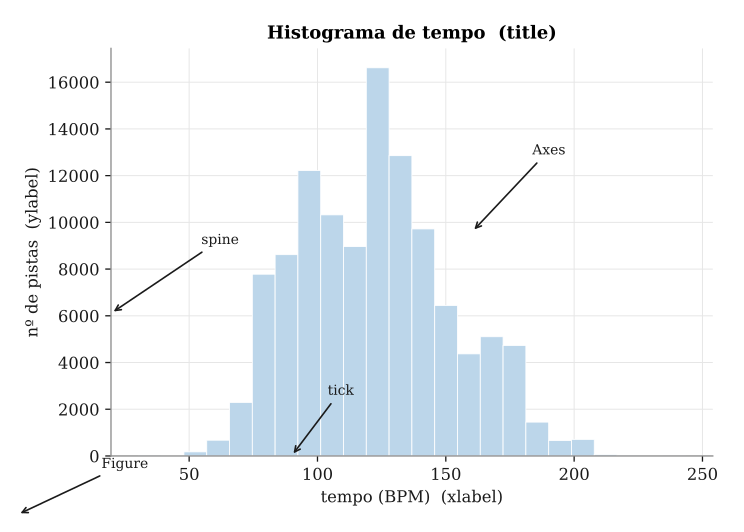
matplotlib, anotados sobre un histograma del tempo (en BPM). La Figure es el lienzo exterior; el Axes, la región donde se dibujan los datos; las spines enmarcan ese Axes; las ticks son las marcas de los ejes; y el título y las etiquetas los ponen set_title, set_xlabel y set_ylabel. Datos: catálogo musical. Generada por src/cap12_visualizacion.py.Conviene leerla elemento a elemento, porque cada nombre es también el de un objeto o un método. La Figure es el marco exterior: la ventana en pantalla o la página del fichero, lo que se guarda entero. El Axes —en singular, y no debe confundirse con un «eje» (axis)— es la región interior con cuadrícula donde caen las barras; una misma Figure puede alojar varios, uno al lado de otro. Las spines son las líneas que enmarcan el Axes; el estilo del libro deja solo la inferior y la izquierda y retira las otras dos, recesivas, para ahorrar tinta (§ de principios). Las ticks son las marcas graduadas de cada eje con sus rótulos numéricos. Y el título, la etiqueta del eje horizontal y la del vertical no son texto suelto: son el resultado de ax.set_title, ax.set_xlabel y ax.set_ylabel, tres métodos del objeto ax. Entender que fig y ax son objetos con métodos —y no una retahíla de órdenes mágicas— es, en una frase, lo que vuelve manejable a matplotlib.
Ese modelo dibuja también el ciclo de vida de cualquier gráfico del libro, y conviene fijarlo porque se repetirá idéntico en cada figura de las secciones siguientes: se crea la pareja Figure/Axes con plt.subplots; se dibuja llamando a los métodos de ax (uno por capa: los datos, luego las líneas de referencia, luego las etiquetas); y se remata con métodos de fig —el ajuste de márgenes y el guardado—. Crear, dibujar, guardar: tres pasos, dos objetos. Con ese esqueleto en la cabeza, leer el código de cualquiera de las dieciséis figuras de este capítulo es reconocer una variación del mismo patrón.
Guardar: la figura vectorial
Una figura no se termina en la pantalla, sino en un fichero, y ese fichero lo escribe un método de la Figure: fig.savefig. Aquí se decide algo que afecta a la nitidez de todo el libro: el formato. Un PNG es una imagen rasterizada, una rejilla de píxeles; su resolución se fija al guardar con dpi (puntos por pulgada) y, si luego se amplía, se ve dentada. Un PDF o un SVG son vectoriales: guardan las órdenes de dibujo —traza esta línea, rellena este rectángulo— en lugar de píxeles, de modo que el resultado es nítido a cualquier escala, del pie de página al póster. Este libro usa PDF vectorial por esa razón; de ahí que sus figuras se vean limpias sin importar el tamaño al que se impriman.
fig.savefig("figuras/histograma.pdf") # vectorial, nitido
fig.savefig("figuras/histograma.png", dpi=200) # raster, a 200 dpiLa misma orden, savefig, elige el motor de exportación por la extensión del nombre. Existe además un tercer camino, el backend pgf (fig.savefig("x.pgf")), que delega el texto en el propio LaTeX y hereda así las fuentes del documento, para figuras tipográficamente indistinguibles de la prosa que las rodea.
Vectorial no es siempre la respuesta. Cuando una figura contiene millones de marcas —un mapa de dispersión con un punto por cada fila de un dataset enorme, o una imagen de satélite de fondo— el PDF guarda una orden por marca y crece hasta pesar más y abrir más lento que un PNG equivalente; ahí lo sensato es rasterizar (con dpi generoso) esa capa. La regla práctica: vectorial para lo que son líneas, barras y texto —el grueso de un gráfico estadístico—; raster para lo fotográfico o lo densísimo. Un último apunte de tamaño: la combinación de figsize (en pulgadas) y dpi fija a la vez las dimensiones físicas y la resolución, así que la tipografía de la figura puede casarse con la del texto sin escalados posteriores que la deformen.
Casi ninguna figura interesante tiene un solo panel. La misma plt.subplots compone rejillas: con nrows y ncols devuelve un array de Axes que se recorre como cualquier matriz de NumPy.
fig, axs = plt.subplots(nrows=2, ncols=2, figsize=(9, 7))
(sup_izq, sup_der), (inf_izq, inf_der) = axs
# axs es un array 2x2 de Axes: se dibuja en cada celda
fig.tight_layout() # ajusta margenes para que nada se solapePara retículas irregulares —un panel ancho arriba y dos estrechos abajo— está plt.subplot_mosaic, que dibuja la disposición con una cadena de texto (por ejemplo "AB;CC": dos paneles en la fila de arriba y uno que ocupa toda la de abajo) y devuelve los Axes indexados por su letra. Y fig.tight_layout, llamado al final, reajusta los márgenes para que títulos y etiquetas no se pisen: el remate que separa una composición apretada de una legible. Las versiones recientes ofrecen la variante layout="constrained" al crear la figura, que hace ese ajuste de forma continua; para nuestro propósito, cualquiera de las dos evita el solapamiento.
La figura como código reproducible
Llegamos así a una promesa que el cap. 10 dejó pendiente. Su política de datos (§10.7) exigía que todo resultado se generase con código y declarase su procedencia; una figura es un resultado más, y por tanto se rige por la misma regla. Una figura de este libro no se retoca a mano en un editor de imágenes: se genera con un script determinista que lee los datos, dibuja y guarda. La consecuencia es cómoda y honesta a la vez: cuando los datos cambian —llega un mes nuevo, se corrige una estación averiada— la figura se regenera con una sola orden, y nunca hay un desfase entre el número que cita el texto y el que muestra la gráfica. El mecanismo es idéntico sea cual sea el dato; aquí trabajamos sobre el catálogo musical (maharshipandya 2022), 113 999 pistas con sus rasgos de audio, que cada pie declara como fuente.
De ese principio nace una ventaja práctica que resume el capítulo: una fuente, varios renders. Del mismo fichero src/cap12_visualizacion.py salen el PDF vectorial de esta edición impresa, el SVG de la versión web y los propios datos que los alimentan; no son tres artefactos que haya que mantener sincronizados a mano, sino tres salidas de un único código. Cambiar el formato de entrega es cambiar una extensión en savefig, no rehacer la figura. Un gráfico, en suma, deja de ser una ilustración decorativa para ser un dato que declara de dónde viene y cómo se hizo: quien lo lea puede abrir el script, seguir el camino de los datos a los píxeles y reproducirlo hasta el último tick.
Comparar magnitudes: el gráfico de barras
Con el método y la caja de herramientas de matplotlib en la mano, empezamos el catálogo por temática por la pregunta más común que un dato nos plantea: comparar una magnitud entre categorías. ¿Qué género es más popular? ¿Qué rasgo de audio domina en cada género? La forma que responde a esa pregunta casi siempre es la misma, y no por costumbre sino por percepción: comparar cantidades es comparar posiciones sobre un eje común, y ese es justo el extremo bueno de la jerarquía de codificaciones de Cleveland y McGill que recorrimos en la §12.1.1 (Cleveland y McGill 1984). El ojo lee con precisión el extremo de una barra apoyada en una línea base compartida; en cambio juzga mal ángulos y áreas. De ahí que el gráfico de barras, tan modesto, sea la respuesta correcta a una familia enorme de preguntas.
Modesto no quiere decir automático. Un gráfico de barras honrado y legible obedece a un puñado de reglas que este libro aplica sin excepción, y que conviene enunciar antes de dibujar ninguna:
Ordenar por valor, no alfabéticamente, salvo que las categorías tengan un orden natural (meses, tramos de edad). El orden es información: convierte la figura en un ranking legible de un vistazo.
Barras horizontales cuando las etiquetas son largas. Girar el gráfico deja que los nombres se lean en horizontal, sin rotarlos ni truncarlos.
Empezar el eje en cero. La longitud de la barra codifica la magnitud; si la base no es cero, la longitud miente. Es la honestidad del eje que exigimos en la §12.1.2 (Tufte 2001).
Resaltar la barra relevante y atenuar el resto. Un solo color de énfasis dirige la mirada; el gris para el contexto evita el arcoíris que no significa nada.
Etiqueta de valor directa y selectiva. Anotar el número sobre la barra ahorra el viaje de ida y vuelta al eje, pero solo donde aporte: etiquetarlas todas vuelve a llenar de ruido.
Barras ordenadas
Empecemos por el caso de una sola dimensión: comparar la popularidad media entre un puñado de géneros. El ingrediente es un groupby como los del cap. 8 (§8.4) que promedia por género; el resto del listado es la traducción, regla a regla, de la lista anterior. La materia prima es el catálogo musical (maharshipandya 2022), ya curado por el cap. 10.
import matplotlib.pyplot as plt
import pandas as pd
from cap12_estilo import AZUL, GRIS, aplicar
aplicar() # paleta Okabe-Ito del libro
punado = ["classical", "jazz", "rock", "reggaeton",
"hip-hop", "pop"]
mus = pd.read_parquet("data/processed/musica.parquet")
sel = mus[mus["track_genre"].isin(punado)]
med = sel.groupby("track_genre")["popularity"].mean().round(1)
med = med.sort_values() # regla: ordenar por VALOR
colores = [GRIS] * len(med)
colores[-1] = AZUL # regla: resaltar la mayor
fig, ax = plt.subplots(figsize=(6, 3.6))
y = range(len(med))
ax.barh(y, med.to_numpy(), color=colores) # barras horizontales
ax.set_yticks(y)
ax.set_yticklabels(med.index)
ax.set_xlabel("popularidad media")
ax.set_xlim(0, 55) # regla: eje desde CERO
ax.axvline(33.2, color="#1a1a1a", ls=":", lw=1) # media global
for yi, v in zip(y, med.to_numpy()):
ax.text(v + 0.4, yi, f"{v:.1f}", va="center") # etiqueta
print(med.tolist())
print("lider:", med.idxmax())
# [13.1, 13.6, 19.0, 23.9, 37.8, 47.6]
# lider: popEl resultado es la figura 12.5. Nótese cómo cada línea paga una regla: sort_values ordena el ranking, la lista colores pinta de gris todo salvo la última barra —la mayor, que queda en azul—, set_xlim arranca el eje en cero y el bucle final estampa el valor junto a cada barra. La línea de puntos marca la media global de popularidad (\(33{,}2\)), un referente que da sentido a la comparación.
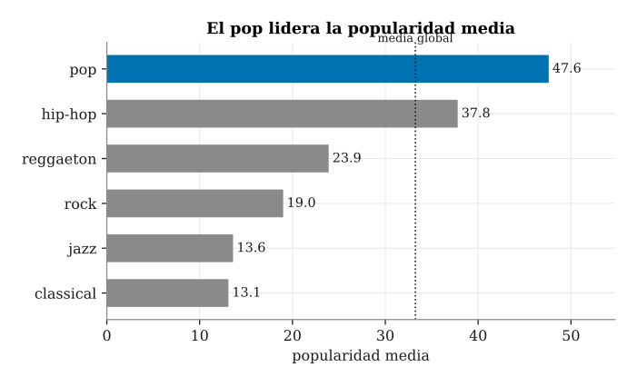
src/cap12_visualizacion.py.Y aquí, a diferencia de otras figuras del capítulo, el gráfico sí descubre estructura. Las seis cifras —pop 47,6, hip-hop 37,8, reggaeton 23,9, rock 19,0, jazz 13,6 y classical 13,1— no son casuales: cada género tiene su público, y el orden refleja una señal real. El pop y el hip-hop, de gran consumo, encabezan y superan con holgura la media global; el jazz y el clásico, de audiencia más reducida, cierran por debajo. Esto es exactamente para lo que sirven las barras ordenadas —convertir seis medias en un ranking legible de un vistazo—, y el pie declara la fuente porque el dato es real, no de laboratorio (cap. 10).
Dos factores: barras agrupadas
Muchas comparaciones tienen dos dimensiones a la vez. Aquí queremos ver, para cada género, la media de tres rasgos de audio —danceability, energy y valence, los tres en el rango \([0, 1]\)—. Tomamos tres géneros de firma acústica bien distinta (maharshipandya 2022): classical, pop y reggaeton. Un gráfico de barras agrupadas coloca, dentro de cada género, una barra por rasgo; el color codifica el rasgo y una leyenda lo traduce.
import numpy as np
from cap12_estilo import AZUL, NARANJA, VERDE
# reutilizamos el DataFrame mus ya cargado
rasgos = ["danceability", "energy", "valence"]
color_ras = {"danceability": AZUL, "energy": NARANJA,
"valence": VERDE}
generos = ["classical", "pop", "reggaeton"]
d = mus[mus["track_genre"].isin(generos)]
tabla = d.pivot_table(index="track_genre", values=rasgos,
aggfunc="mean")
tabla = tabla.reindex(generos)[rasgos].round(3)
fig, ax = plt.subplots(figsize=(6.4, 3.9))
x = np.arange(len(generos))
w = 0.26
for k, r in enumerate(rasgos):
ax.bar(x + (k - 1) * w, tabla[r], width=w,
color=color_ras[r], label=r) # color = rasgo
ax.set_xticks(x)
ax.set_xticklabels(generos)
ax.set_ylabel("valor medio del rasgo (0-1)")
ax.set_xlabel("género")
ax.legend(title="rasgo") # leyenda: 3 series
print(tabla.to_numpy())
# [[0.382 0.190 0.381]
# [0.630 0.606 0.506]
# [0.759 0.739 0.643]]El diccionario color_ras encarna una regla sutil pero importante: el color codifica identidad, no rango. Cada rasgo lleva siempre su color de la paleta Okabe-Ito —danceability azul, energy naranja, valence verde—, fijado de antemano y nunca asignado por el orden de las barras. Así el lector aprende el código una vez y lo reutiliza en todas las figuras del capítulo. Y como hay tres series por grupo, la leyenda deja de ser opcional: sin ella los colores no significan nada.
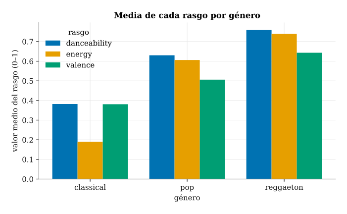
src/cap12_visualizacion.py.La figura 12.6 confirma lo que la tabla adelanta: el reggaeton encabeza los tres rasgos (danceability \(0{,}76\), energy \(0{,}74\), valence \(0{,}64\)), el pop queda en medio (\(0{,}63\)/\(0{,}61\)/\(0{,}51\)) y el clásico abajo, con una energy muy baja (\(0{,}19\)) frente a su danceability y su valence (\(0{,}38\)). Aquí el segundo factor sí habla: cada género tiene una firma acústica distinta, y esa firma es la que un modelo aprovechará en el cap. 13 para adivinar el género por el sonido. Y de un vistazo se lee también la comparación dentro de cada grupo, que es exactamente para lo que sirven las barras agrupadas.
Conviene no confundirlas con las barras apiladas, que colocan las series una encima de otra. La diferencia no es cosmética. Las agrupadas comparan magnitudes independientes dentro de un grupo, y todas se apoyan en la misma línea base: por eso funcionan. Las apiladas suman las alturas, y esa suma solo tiene sentido cuando las partes componen un todo —una relación parte-todo, como el reparto de franjas de popularidad o la cuota de un mercado—. Apilar danceability, energy y valence sería un error de significado: su suma no mide nada, son rasgos distintos. Y hay un motivo perceptivo que agrava el de significado: en una pila solo el segmento inferior descansa sobre una base común; los de arriba «flotan» sobre alturas variables, y comparar sus longitudes vuelve a ser el problema que la §12.1.1 nos enseñó a evitar. Por eso, aun para el caso parte-todo legítimo, las barras apiladas se usan con cuidado y solo cuando importa el total, no la comparación fina entre segmentos.
Ver una distribución: cuatro formas de asomarse
El cap. 11 nos dejó una consigna y una promesa. La consigna, al describir una muestra (§11.1): un número nunca describe una distribución; a lo sumo la resume, y todo resumen tira algo por la borda. La promesa, repetida allí más de una vez: que el histograma y los gráficos de distribución llegarían con este capítulo. Es aquí donde se cumple. Vamos a aprender a mirar una distribución, no solo a numerarla, con cuatro instrumentos que se complementan —el histograma y su versión suave, el diagrama de caja, el de violín y la función acumulada— y a cerrar la sección con la figura que, mejor que ningún argumento, explica por qué hay que mirar: el cuarteto de Anscombe.
Ninguno de los cuatro es «el mejor». Cada uno privilegia una pregunta: el histograma enseña la forma con sus modas y sus colas; la caja comprime la muestra en cinco números robustos y señala los atípicos; el violín reúne lo uno y lo otro; la función acumulada deja leer cualquier percentil sin decidir nada de antemano. Saber cuál elegir —y saber que conviene combinarlos— es parte del oficio (Wilke 2019). Trabajaremos, como todo el capítulo, con el catálogo musical (maharshipandya 2022) y tres de sus rasgos de audio: danceability, energy y valence, los tres medidos en el rango \([0, 1]\).
El histograma y la densidad
El histograma es la forma más directa de ver una distribución: se parte el recorrido de la variable en intervalos contiguos (bins) del mismo ancho y se cuenta cuántas observaciones caen en cada uno. Las barras resultantes dibujan el relieve de los datos —dónde se amontonan, dónde escasean, si hay una sola loma o varias—. Su único parámetro de verdad es el número de intervalos, y no es inocente: con pocos, distintas realidades se funden en la misma barra y la forma se aplana; con demasiados, cada oscilación del muestreo se convierte en un pico y el ruido suplanta a la señal. El cap. 11 ya adelantó la regla que usaremos por defecto —elegir el más fino entre las propuestas de Sturges y de Freedman–Diaconis, que es justo lo que hace bins="auto" de matplotlib—; sobre nuestra danceability esa receta propone del orden de tres decenas de intervalos, resolución sobrada para ver la campana sin astillarla.
A esa cuenta por barras podemos superponerle una curva continua que estime la densidad subyacente: la estimación de densidad por núcleo (kernel density estimate, KDE). En vez de contar dentro de cajones rígidos, coloca una pequeña campana (el núcleo) sobre cada dato y las suma; el resultado es una versión suavizada del histograma, sin escalones, que a menudo hace más legible la forma. Se calcula con gaussian_kde de scipy.stats. Marcamos además la media y la mediana, los resúmenes de posición del cap. 11, para ver dónde caen sobre la distribución que resumen:
import numpy as np
import pandas as pd
from scipy import stats
import matplotlib.pyplot as plt
mus = pd.read_parquet("data/processed/musica.parquet")
dance = mus["danceability"]
media, mediana = dance.mean(), dance.median()
print(f"media = {media:.3f}, mediana = {mediana:.3f}")
# media = 0.567, mediana = 0.580
kde = stats.gaussian_kde(dance) # densidad por nucleo
malla = np.linspace(dance.min(), dance.max(), 200)
fig, ax = plt.subplots(figsize=(6, 3.8))
ax.hist(dance, bins="auto", density=True, color="#bcd6ea",
edgecolor="white") # density: area total = 1
ax.plot(malla, kde(malla), color="#0072B2")
ax.axvline(media, color="#D55E00", ls="--")
ax.axvline(mediana, color="#009E73", ls="--")
ax.set_xlabel("danceability")
ax.set_ylabel("densidad")
fig.savefig("cap12_histograma.pdf") # PDF vectorialEl argumento density=True normaliza las barras para que el área total valga uno, de modo que histograma y KDE compartan la escala vertical y puedan dibujarse juntos. El resultado es la figura 12.7: una campana casi simétrica en el entorno de \(0{,}58\), con la media (\(0{,}567\)) y la mediana (\(0{,}580\)) casi superpuestas —la firma de una distribución sin apenas sesgo—. En un rasgo asimétrico —la speechiness o la acousticness, sesgadas a la derecha— las dos líneas se separarían, y esa separación sería en sí misma un dato sobre la forma (§11.1.2).
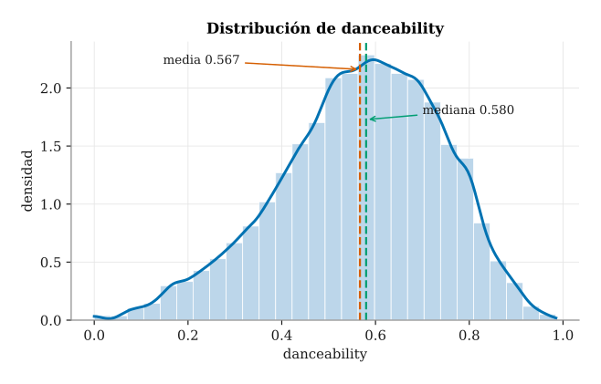
danceability. Distribución de la danceability: histograma normalizado (density=True) con la estimación de densidad por núcleo superpuesta y las líneas de la media (\(0{,}567\)) y la mediana (\(0{,}580\)). Datos: catálogo musical. Generada por src/cap12_visualizacion.py.Caja y violín
El diagrama de caja (box plot), invención de John Tukey en su análisis exploratorio de datos (Tukey 1977), comprime toda la muestra en un resumen de cinco números. La caja abarca el rango intercuartílico: su borde inferior es el primer cuartil \(Q_1\), el superior el tercero \(Q_3\), y la línea interior la mediana. De los bordes salen los bigotes, que se extienden hasta el dato más alejado que aún cae dentro de las vallas de Tukey, a \(1{,}5\cdot\mathrm{IQR}\) de la caja; lo que las rebasa se dibuja punto a punto como atípico. Son exactamente las vallas con las que el cap. 10 marcó los valores atípicos (§10.5.3): el diagrama de caja es su retrato visual. Sobre la danceability salen estos números:
rasgos = ["danceability", "energy", "valence"]
datos = [mus[r] for r in rasgos]
q1, med, q3 = np.percentile(datos[0], [25, 50, 75]) # danceability
iqr = q3 - q1
valla_baja, valla_alta = q1 - 1.5 * iqr, q3 + 1.5 * iqr
print(f"Q1={q1:.3f} Med={med:.3f} Q3={q3:.3f} IQR={iqr:.3f}")
print(f"vallas de Tukey: [{valla_baja:.3f}, {valla_alta:.3f}]")
# Q1=0.456 Med=0.580 Q3=0.695 IQR=0.239
# vallas de Tukey: [0.098, 1.053]
fig, (izq, der) = plt.subplots(1, 2, sharey=True)
izq.boxplot(datos, tick_labels=rasgos) # caja
der.violinplot(datos, showmedians=True) # violin
izq.set_ylabel("valor del rasgo (0-1)")El resumen es cómodo y robusto, pero paga un precio: la caja esconde la forma. Como solo conoce cinco números, no distingue una distribución de otra que tenga los mismos cuartiles pero un relieve distinto; en particular, es ciega a la bimodalidad —dos grupos bien separados pueden dar la misma caja que un único montón—. El diagrama de violín (violin plot) remedia justo eso: sobre el mismo eje dibuja, espejada, la densidad estimada (un KDE como el de antes), de modo que se ve a la vez el resumen y la silueta completa de la distribución. La figura 12.8 enfrenta ambas lecturas para los tres rasgos: a la izquierda las cajas, a la derecha los violines, con un color por rasgo.
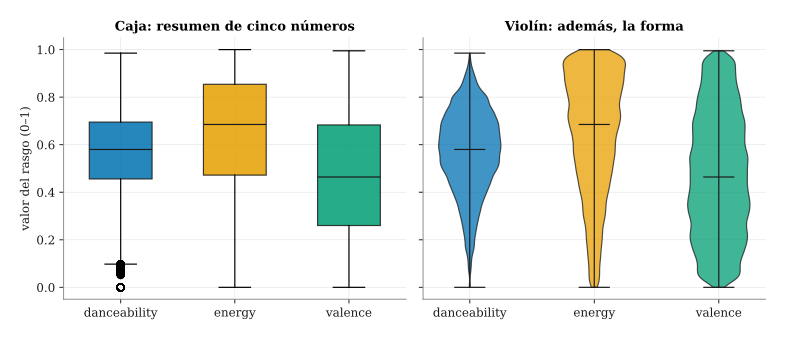
src/cap12_visualizacion.py.Aquí los violines revelan lo que la caja calla: tres formas bien distintas. La danceability, una sola loma casi simétrica en torno a \(0{,}58\); la energy, empujada hacia lo alto —mediana \(0{,}685\)— con una cola larga por debajo; y la valence, la más ancha y plana, casi repartida entre \(0{,}26\) y \(0{,}68\). Tres distribuciones que en cinco números podrían parecerse y que, dibujadas, no se confunden: si una tuviera dos modas —dos públicos, dos estilos mezclados—, la caja lo callaría y el violín lo gritaría. Esa es su ventaja, y por eso conviene mirar la forma antes de fiarse del resumen.
La ECDF
La función de distribución acumulada empírica (empirical cumulative distribution function, ECDF) responde a una pregunta distinta: para cada valor \(x\), ¿qué fracción de la muestra queda por debajo de él? Es una escalera que sube de 0 a 1: se ordenan los datos y a cada uno se le asigna la altura \(i/n\). Su gran virtud frente al histograma es que no exige elegir nada: sin intervalos ni ancho de banda, ninguna decisión distorsiona la imagen; muestra los datos tal cual. Se construye con las dos herramientas más elementales de numpy, np.sort y np.arange:
def ecdf(v):
x = np.sort(v) # datos ordenados
y = np.arange(1, len(x) + 1) / len(x) # alturas i/n
return x, y
x, y = ecdf(datos[0].to_numpy()) # danceability
frac = (x <= 0.58).mean() # leer un percentil
print(f"danceability <= 0.58 en el {frac:.0%} de las pistas")
# danceability <= 0.58 en el 50% de las pistas
fig, ax = plt.subplots(figsize=(6, 3.8))
for r, serie in zip(rasgos, datos):
ex, ey = ecdf(serie.to_numpy())
ax.step(ex, ey, where="post", label=r)
ax.axhline(0.5, color="#8a8a8a", ls=":") # la mediana
ax.set_xlabel("valor del rasgo (0-1)")
ax.set_ylabel("proporción acumulada")
ax.legend()Leer una ECDF es leer percentiles a ojo: se entra por el eje horizontal en un valor, se sube hasta la curva y su altura es la fracción de datos por debajo. Sobre la danceability, entrar en \(0{,}58\) —su mediana— lleva justo a la altura \(0{,}5\): la mitad de las pistas quedan por debajo de ese valor, coherente con la mediana ya calculada. Al revés, entrando por \(0{,}5\) y bajando a cada curva se leen las tres medianas de un vistazo. La figura 12.9 superpone los tres rasgos; como comparten el rango \([0, 1]\), las escaleras se cruzan, pero su orden por mediana —valence \(0{,}46\), danceability \(0{,}58\), energy \(0{,}69\)— se lee sin ambigüedad. Ese poder de comparación limpio, sin la arbitrariedad de los bins, hizo de la acumulada una de las herramientas favoritas de Cleveland para el análisis serio (Cleveland 1994).
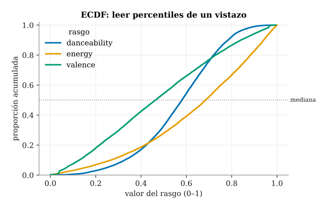
src/cap12_visualizacion.py.Por qué hay que mirar: Anscombe
Cerramos la sección cumpliendo la última deuda del cap. 11, que al describir una muestra (§11.1) advirtió que ningún resumen sustituye a mirar los datos y prometió mostrarlo. La prueba clásica la construyó el estadístico Francis Anscombe en 1973 (Anscombe 1973): cuatro conjuntos de once puntos cada uno, fabricados para compartir casi todos los estadísticos habituales. Comprobémoslo antes de dibujarlos:
x = np.array([10, 8, 13, 9, 11, 14, 6, 4, 12, 7, 5.0])
x4 = np.array([8, 8, 8, 8, 8, 8, 8, 19, 8, 8, 8.0])
ys = {
"I": [8.04, 6.95, 7.58, 8.81, 8.33, 9.96, 7.24, 4.26,
10.84, 4.82, 5.68],
"II": [9.14, 8.14, 8.74, 8.77, 9.26, 8.10, 6.13, 3.10,
9.13, 7.26, 4.74],
"III": [7.46, 6.77, 12.74, 7.11, 7.81, 8.84, 6.08,
5.39, 8.15, 6.42, 5.73],
"IV": [6.58, 5.76, 7.71, 8.84, 8.47, 7.04, 5.25,
12.50, 5.56, 7.91, 6.89],
}
xs = {"I": x, "II": x, "III": x, "IV": x4}
for k in ys:
xv, yv = xs[k], np.array(ys[k])
pend, corte = np.polyfit(xv, yv, 1) # recta ajustada
r = np.corrcoef(xv, yv)[0, 1] # correlacion
print(f"{k:<3} media_x={xv.mean():.1f} "
f"media_y={yv.mean():.1f} r={r:.2f} "
f"y={corte:.1f}+{pend:.2f}x")
# I media_x=9.0 media_y=7.5 r=0.82 y=3.0+0.50x
# II media_x=9.0 media_y=7.5 r=0.82 y=3.0+0.50x
# III media_x=9.0 media_y=7.5 r=0.82 y=3.0+0.50x
# IV media_x=9.0 media_y=7.5 r=0.82 y=3.0+0.50xLos cuatro coinciden hasta el segundo decimal: media de \(x\) igual a 9,0, media de \(y\) igual a 7,5, correlación \(r=0{,}82\) y la misma recta de ajuste \(y = 3{,}0 + 0{,}50\,x\). Quien solo mirase esa tabla los tomaría por gemelos. Y son cuatro criaturas distintas, como revela la figura 12.10 en cuanto se dibujan: el primero es una nube lineal; el segundo, una curva limpia que ninguna recta debería describir; el tercero, una recta casi perfecta descarrilada por un solo atípico; el cuarto, una columna vertical a la que un único punto lejano regala toda su pendiente. Los estadísticos resumen, y resumir es promediar formas incompatibles hasta volverlas indistinguibles; la vista, en cambio, las separa de inmediato.
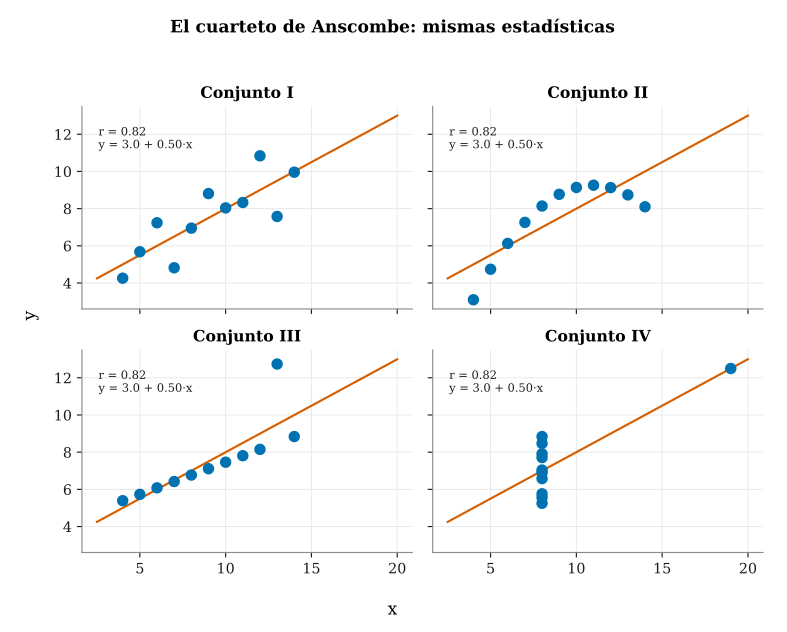
src/cap12_visualizacion.py.Esta moraleja enlaza con la advertencia del cap. 11 (§11.1) y sostiene todo el capítulo: los estadísticos comprimen, y en la compresión se pierde precisamente lo que un gráfico devuelve. Medio siglo después la lección sigue vigente y modernizada —la misma demostración se ha rehecho con un dinosaurio y una docena de figuras que comparten media, varianza y correlación—. Con las cuatro formas de asomarse de esta sección, y el hábito de mirar antes de creer, tenemos ya con qué no dejarnos engañar por un resumen; las secciones siguientes amplían la caja de herramientas hacia la relación entre variables y su evolución en el tiempo.
Relación y perfil: dispersión, calor y línea
Las secciones anteriores retrataron las variables de una en una: el histograma, la caja, el violín y la ECDF de la §12.4 son todos maneras de mirar una única columna. Pero hay dos preguntas que ningún gráfico de una variable puede responder: cómo se mueven juntas dos magnitudes —la relación— y cómo se perfila una sola a lo largo de una escala ordenada —el perfil—. Son dos temáticas distintas, y sin embargo comparten el punto de partida: el plano. Dos ejes, una marca por observación y la información cifrada en la posición, que es el canal visual más preciso de cuantos manejamos. Esta sección recorre las tres formas canónicas del plano —el gráfico de dispersión, el mapa de calor y el gráfico de línea— y, con ellas, cierra el repertorio de la exploración visual.
Relación entre dos variables
Para dos magnitudes continuas la forma canónica es el gráfico de dispersión (scatter plot): cada observación es un punto cuyas coordenadas \((x, y)\) son sus dos valores. No hay codificación más directa —posición contra posición—, y el ojo lee de un vistazo las tres propiedades de una relación: su dirección (¿suben las dos a la vez, o una baja cuando la otra sube?), su forma (¿recta, curva, en escalón?) y su fuerza (¿una nube apretada en torno a una línea, o una niebla difusa?). Es la imagen que hay detrás del coeficiente de correlación que calculamos en el cap. 11 (§11.1): un número resume la nube, pero la nube enseña lo que el número esconde —la moraleja del cuarteto de Anscombe, que en este mismo capítulo vemos dibujada—.
Con pocos puntos, un scatter basta. Con miles, el gráfico se satura: los puntos se apilan, las zonas densas se funden en una mancha opaca y deja de distinguirse si en un sitio caen dos observaciones o dos mil. Es el sobredibujado (overplotting), y tiene dos remedios habituales. El primero, bajar la opacidad de cada punto —el parámetro alpha—, de modo que la densidad se traduzca en intensidad: donde se amontonan muchos puntos el color se satura. El segundo, renunciar a los puntos y agregar el plano en celdas, un histograma bidimensional que colorea cada celda según cuántas observaciones contiene. La rejilla hexagonal de hexbin hace exactamente eso, y la tiñe con un mapa de color secuencial como viridis (Wilke 2019). Enfrentemos así la popularity y la energy de las 113 999 pistas —dos columnas de la misma fila, sin necesidad de emparejar nada—:
import numpy as np
import pandas as pd
import matplotlib.pyplot as plt
mus = pd.read_parquet("data/processed/musica.parquet")
r = np.corrcoef(mus["energy"], mus["popularity"])[0, 1]
print(f"n = {len(mus)}, r = {r:.2f}")
# n = 113999, r = 0.00
# hexbin agrega los puntos en celdas y evita el sobredibujado
fig, ax = plt.subplots(figsize=(6, 4.2))
hb = ax.hexbin(mus["energy"], mus["popularity"], gridsize=28,
cmap="viridis", mincnt=1)
fig.colorbar(hb, ax=ax, label="nº de pistas")
ax.set_xlabel("energy (0-1)")
ax.set_ylabel("popularidad (0-100)")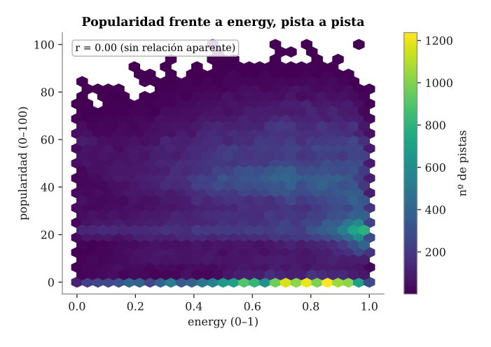
energy. Cada celda hexagonal cuenta las pistas con esa pareja de valores: la nube no tiene inclinación, de ahí \(r = 0{,}00\). Datos: catálogo musical. Generada por src/cap12_visualizacion.py.La Figura 12.11 recorre las \(113\,999\) pistas y el resultado es una nube sin eje mayor: sube tanto como baja, \(r = 0{,}00\), sin relación aparente. Y aquí la ausencia de relación no es un artefacto del gráfico ni una casualidad: es el hallazgo. La popularidad de una canción —cuánto se la escucha— no se lee en su sonido. Ninguno de los rasgos de audio la predice: todos rondan \(|r| \le 0{,}1\), y la energy de esta figura marca literalmente cero. El éxito es un fenómeno social —quién publica la canción, quién la comparte, en qué lista de reproducción cae—, no una propiedad acústica. Que la nube sea redonda es, aquí, una verdad honesta y algo incómoda, y por eso conviene subrayarla: quien esperase adivinar la popularidad a partir del sonido se llevaría un chasco. Entre los rasgos, en cambio, sí hay relaciones fuertes —la energy y la loudness suben juntas—, y el mapa de calor de la próxima sección las revela de un vistazo. La destreza que la figura enseña es la misma de siempre: a leer una nube, a separar una que tiene estructura de otra que no la tiene, porque —ya lo vimos— dos nubes con formas opuestas pueden esconder el mismo \(r\).
Estructura 2D: el mapa de calor
Cuando los dos ejes dejan de ser continuos y pasan a ser categóricos —aquí, cada eje es la misma lista de rasgos de audio— y lo que interesa es un valor en cada cruce —aquí, la correlación entre cada par de rasgos—, el gráfico de dispersión ya no encaja: no hay una nube que dibujar, sino una cuadrícula completa de casillas que rellenar. La forma natural es el mapa de calor (heatmap): una rejilla en la que cada celda, fijada por su fila y su columna, se pinta con un color que codifica el valor de la tercera variable.
El color es aquí el portador del valor, y elegirlo bien es media figura. La regla depende de la naturaleza del dato. Cuando ese valor tiene un cero con sentido y signo —una correlación va de \(-1\) a \(+1\), y el cero significa «sin relación»—, la elección correcta no es un mapa secuencial, sino uno divergente: dos rampas que parten de un blanco central hacia dos extremos, una para lo positivo y otra para lo negativo. Usamos RdBu, divergente y apto para daltónicos, con el cero anclado en el blanco (rojo, correlación positiva; azul, negativa). La regla de fondo no cambia: perceptualmente equilibrado, nunca arcoíris, y la barra de color siempre etiquetada con su magnitud: sin ella el mapa es una decoración, no una medición.
rasgos = ["danceability", "energy", "loudness", "speechiness",
"acousticness", "instrumentalness", "liveness",
"valence", "tempo"]
# una celda por (rasgo, rasgo): la correlacion entre ambos
corr = mus[rasgos].corr()
print(corr.shape, round(corr.loc["energy", "loudness"], 2))
# (9, 9) 0.76
fig, ax = plt.subplots(figsize=(7.2, 6.0))
im = ax.imshow(corr.to_numpy(), cmap="RdBu_r",
vmin=-1, vmax=1) # cero anclado al blanco
fig.colorbar(im, ax=ax, label="correlación (r)")
ax.set_xticks(range(len(rasgos)))
ax.set_yticks(range(len(rasgos)))
ax.set_xticklabels(rasgos, rotation=45, ha="right")
ax.set_yticklabels(rasgos)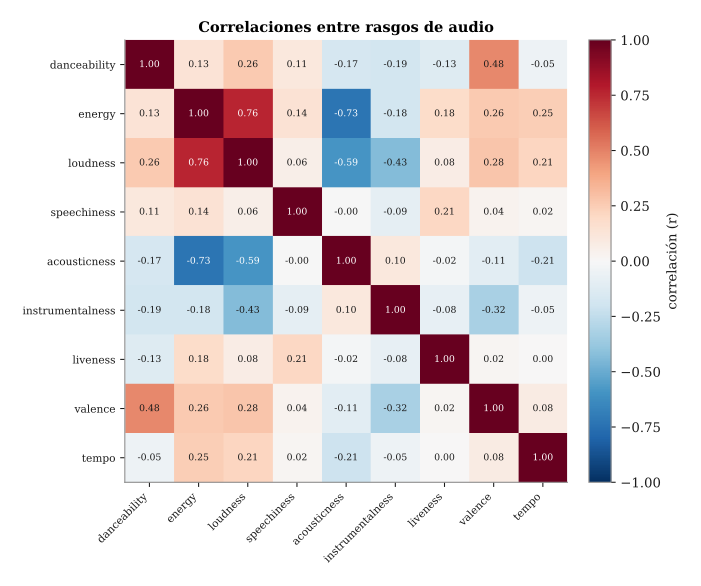
RdBu centrada en el cero (rojo positivo, azul negativo). Datos: catálogo musical. Generada por src/cap12_visualizacion.py.La Figura 12.12 cruza los nueve rasgos consigo mismos y colorea cada casilla con su correlación. La diagonal es roja intensa —cada rasgo correlaciona \(1\) consigo mismo— y sirve de calibración del rojo más fuerte. Fuera de ella asoman los bloques que importan: la energy y la loudness forman una casilla roja (\(r = 0{,}76\)), porque una pista con más energía suena también más alta; la energy y la acousticness, una azul intensa (\(r = -0{,}73\)), porque lo enérgico y lo acústico se oponen; y un rojo suave enlaza danceability con valence (\(r = 0{,}48\)), lo bailable con lo alegre. El mapa condensa \(36\) correlaciones distintas en una imagen que el ojo lee por bloques de color, sin recorrer una tabla número a número: esa es la fuerza del mapa de calor. Y esas relaciones entre rasgos no son ornamento: son la señal que un modelo aprovechará para clasificar el género (cap. 13) y la que obliga a vigilar la multicolinealidad al ajustar una regresión (cap. 14).
El gráfico de línea: un perfil ordenado
Queda la última forma del plano: el gráfico de línea. Su eje horizontal no es una magnitud cualquiera, sino una escala ordenada —aquí, el nivel de popularidad, de \(0\) a \(100\)—, y ese orden lo cambia todo. La codificación natural de una progresión ordenada es la línea: une puntos consecutivos y convierte la sucesión de valores en una trayectoria que el ojo recorre de izquierda a derecha. Y la línea presupone un orden —el de la escala— que es sagrado: a diferencia de las barras, que casi siempre mejoran al ordenarse por valor, una línea jamás se reordena por su valor. Hacerlo destruiría la única información que el eje \(x\) transporta.
Los datos crudos suelen ser ruidosos, y el ruido tapa la tendencia. El remedio es un suavizado: promediar cada punto con sus vecinos inmediatos para limar los dientes de sierra hasta dejar ver el movimiento de fondo. La receta de la figura promedia la loudness de todas las pistas de cada nivel de popularidad y luego pasa una media móvil de siete niveles sobre ese perfil —la misma ventana deslizante del cap. 8 (§8.5.3), aquí sobre una escala ordenada en vez de sobre el tiempo—.
import pandas as pd
import matplotlib.pyplot as plt
mus = pd.read_parquet("data/processed/musica.parquet")
# loudness media por nivel de popularidad y su suavizado
perfil = mus.groupby("popularity")["loudness"].mean()
suave = perfil.rolling(7, center=True, min_periods=1).mean()
print(len(perfil), round(perfil.mean(), 1))
# 101 -7.8
fig, ax = plt.subplots(figsize=(7.6, 3.6))
ax.plot(perfil.index, perfil, color="#8a8a8a", lw=0.9,
label="media por nivel")
ax.plot(suave.index, suave, color="#0072B2", lw=2.2,
label="suavizado local (7)")
ax.axhline(mus["loudness"].mean(), color="#1a1a1a", ls=":", lw=1)
ax.set_ylabel("loudness medio (dB)")
ax.legend()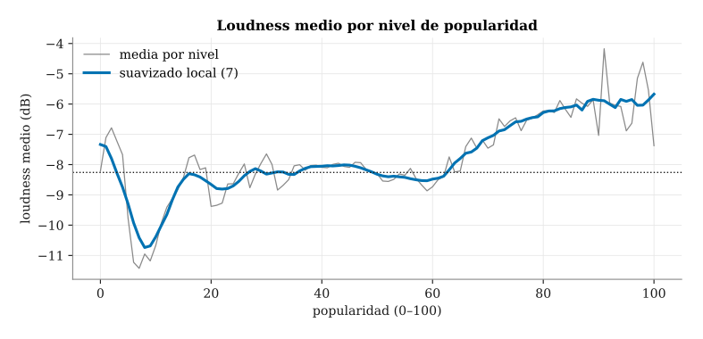
loudness por nivel de popularidad. Loudness media de cada nivel de popularidad (fina, gris) y su suavizado local de \(7\) niveles (gruesa, azul); la línea de puntos marca la loudness media global. Datos: catálogo musical. Generada por src/cap12_visualizacion.py.La Figura 12.13 superpone las dos curvas: la media por nivel —fina y gris, con todos sus temblores, sobre todo en la popularidad alta, donde hay muy pocas pistas— y su suavizado —grueso y azul, que los peina—. El perfil no es plano: la loudness media cae hasta \(-11{,}4\) dB en la popularidad baja (nivel \(7\)) y sube hasta \(-4{,}2\) dB en la alta (nivel \(91\)), un ascenso suave de unos siete decibelios. Las canciones más escuchadas tienden a estar masterizadas más alto —la llamada «guerra del volumen»—, aunque el efecto es débil (\(r \approx 0{,}05\)) y es el suavizado lo que lo deja ver bajo el ruido de los niveles poco poblados: donde la línea gris salta, la azul dibuja la tendencia de fondo, y es esa banda —no cada pico— lo que uno debería creerse.
Dos decisiones de eje merecen comentario, porque tocan la honestidad del §12.1.2. La primera es tajante: no recortar la escala de popularidad. La figura muestra los cien niveles; quedarse solo con el tramo alto —donde el volumen sube— sería el mismo engaño, contar una parte y llamarla el todo. La segunda es más sutil. El eje vertical no arranca en cero, sino cerca de \(-12\) dB: está «truncado». En una gráfica de barras eso dispararía el factor de mentira (Tufte 2001), porque la longitud de la barra codifica la magnitud y exige el cero. Pero en una línea la magnitud la lleva la posición, no una longitud medida desde la base, y un recorrido de siete decibelios dibujado sobre un eje que llegara hasta el cero se vería como una raya casi muerta que oculta la variación. Para una línea que fluctúa lejos del cero, acercar la lupa al rango de los datos es legítimo —y a menudo necesario—, con una condición: declararlo con honestidad. Eje etiquetado, referencia marcada (la línea de puntos en la loudness media) y sin recortes caprichosos. La regla del cero es de las barras, no de las líneas.
Dispersión, mapa de calor y línea completan el recorrido por el plano: la relación entre dos variables, la estructura sobre dos ejes categóricos y el perfil de un rasgo sobre una escala ordenada. Con ellos y con las vistas de distribución de la sección anterior tenemos ya casi todo lo necesario para mirar un dataset por sus cuatro costados —que es, precisamente, lo que haremos al final del capítulo—.
La gramática de gráficos: seaborn y más allá
Hasta aquí hemos dibujado cada gráfico a mano, poniendo un Axes, unas barras y una etiqueta detrás de otra con la interfaz de objetos de matplotlib (§12.2). Es un trabajo minucioso y, para tareas repetidas —mira la distribución de esta variable, ahora la de aquella, ahora ambas por categoría—, francamente tedioso. Las bibliotecas de más alto nivel nacen para ahorrárnoslo: encapsulan buenas decisiones por defecto —una paleta sensata, unos márgenes, una leyenda— y, las mejores de ellas, una idea que va mucho más lejos que el ahorro de teclas: la gramática de gráficos (grammar of graphics).
La formuló Leland Wilkinson (Wilkinson 2005) y la popularizó en la práctica el paquete ggplot2 de Hadley Wickham (Wickham 2010). Su tesis es que un gráfico no es un tipo cerrado que se elige de un catálogo —«hazme un gráfico de tarta», «hazme un histograma»—, sino la composición de unas pocas piezas independientes. Son, en esencia, tres. Una correspondencia (mapeo) que asigna cada variable de los datos a una propiedad visual: el valor de un rasgo al eje vertical, el rasgo al color, el tamaño de la muestra al del punto. Una geometría que decide con qué marca se dibuja esa correspondencia: puntos, barras, líneas, áreas. Y unas transformaciones estadísticas que el propio gráfico calcula antes de dibujar: contar para un histograma, promediar para unas barras, estimar una densidad para un violín. Cambiar la geometría sin tocar la correspondencia produce otra vista de los mismos datos; cambiar la correspondencia sin tocar la geometría, la misma vista de otros datos. Es composición, no recetas, y esa es la diferencia profunda: quien piensa en gramática elige la codificación (posición antes que color, color antes que área) con independencia de la herramienta que tenga a mano.
seaborn
seaborn (Waskom 2021; Waskom y the seaborn contributors 2026) es la biblioteca estadística de alto nivel más extendida del ecosistema de Python. Se construye sobre matplotlib —no lo sustituye: toda figura de seaborn es, por debajo, una Figure con sus Axes, que podemos seguir retocando con lo aprendido en el §12.2— y añade dos cosas: entiende de dataframes de pandas (recibe columnas por su nombre) y sabe hacer, con una sola llamada, los gráficos estadísticos que en la sección de distribuciones (§12.4) nos costaron varias líneas cada uno. Distribuciones, relaciones, gráficos desglosados por categoría: ahí es donde brilla.
Lo más elocuente es rehacer un gráfico que ya conocemos. En el §12.4 dibujamos los diagramas de violín de los tres rasgos componiendo a mano la rejilla, el bucle sobre las categorías y el color de cada una. Con seaborn es una única llamada, porque el desglose por categoría y la estimación de densidad son justo las transformaciones que la biblioteca automatiza:
import pandas as pd
import seaborn as sns
import matplotlib.pyplot as plt
mus = pd.read_parquet("data/processed/musica.parquet")
rasgos = ["danceability", "energy", "valence"]
largo = mus[rasgos].melt(var_name="rasgo", value_name="valor")
fig, ax = plt.subplots(figsize=(6, 3.8))
sns.violinplot( # un violin por rasgo
data=largo, x="rasgo", y="valor",
hue="rasgo", palette="colorblind", # paleta daltonicos
legend=False, inner="box", ax=ax) # inner: caja dentro
ax.set_ylabel("valor (0-1)")
fig.savefig("cap12_seaborn.pdf") # PDF vectorialEl contraste es el mensaje. La correspondencia (x="rasgo", y="valor", hue="rasgo") se declara en palabras, no se programa; el desglose en tres violines, la estimación de densidad de cada uno y la caja interior salen gratis; y palette="colorblind" selecciona una paleta apta para daltónicos —un recordatorio de que las buenas decisiones por defecto también son decisiones de accesibilidad—. La figura 12.14 es el resultado: los mismos tres violines del §12.4 —danceability, energy y valence, con medias \(0{,}567\), \(0{,}641\) y \(0{,}474\)—, producidos con una fracción del código. Conviene, eso sí, no confundir brevedad con magia: seaborn toma decisiones (el ancho de banda del núcleo, el orden de las categorías) que seguimos siendo responsables de entender, exactamente las mismas que tomamos a mano antes.
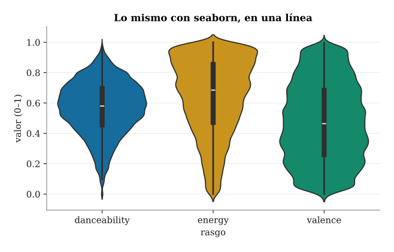
violinplot de seaborn: un violín por rasgo, coloreado con la paleta colorblind. Compárese la brevedad con el matplotlib manual del §12.4. Datos: catálogo musical. Generada por src/cap12_visualizacion.py.Merece la pena conocer una distinción interna de seaborn, porque explica su aparente duplicación de funciones y multiplica su utilidad. Las funciones de nivel de ejes (violinplot, scatterplot, histplot) dibujan sobre un Axes que les entregamos con ax= y se integran sin más en una figura de matplotlib que sigamos componiendo. Las de nivel de figura (catplot, relplot, displot) gestionan su propia figura y, a cambio, regalan el desglose en rejilla: con los argumentos col= o row= parten los datos en una cuadrícula de pequeños múltiplos —un panel por género, pongamos— sin apenas escribir código. Los pequeños múltiplos son una de las herramientas más honestas de la comparación —misma escala, misma marca, un vistazo— y seaborn los deja a un solo argumento de distancia.
La API clásica de seaborn —violinplot, histplot, catplot y compañía— es cómoda pero no es todavía una gramática: cada función es un tipo de gráfico. Desde la versión 0.12, la biblioteca ofrece además una interfaz nueva, seaborn.objects, que sí adopta explícitamente la gramática por capas. En ella un gráfico se construye componiendo una marca (Mark, la geometría) con una transformación (Stat) y se van superponiendo capas con add:
import seaborn.objects as so # gramatica por capas (>= 0.12)
(so.Plot(largo, x="rasgo", y="valor")
.add(so.Dot(), so.Agg()) # Mark=punto, Stat=media
.add(so.Range(), so.Est(errorbar="sd"))) # rango +/- 1 sdSe lee casi como una frase: sobre estos datos, dibuja un punto en la media de cada rasgo y, encima, un rango de una desviación típica. Es la misma lógica de ggplot2 trasladada a Python. Conviene saber, de todos modos, que en 2026 seaborn.objects sigue marcada como experimental: coexiste con la API clásica, que continúa siendo la recomendada para el trabajo diario, y su interfaz aún puede cambiar.
El ecosistema gramático
seaborn no es la única heredera de la gramática de gráficos en Python; a su alrededor ha crecido un pequeño ecosistema que conviene conocer para elegir con criterio, aunque no lo usemos en este libro.
plotnine es la implementación más fiel de ggplot2 en Python: reproduce su sintaxis casi carácter por carácter —el ggplot(...) + geom_point() + ... que sumaba capas con el operador +— y en 2026 es un proyecto activo. Para quien llega de R con ggplot2 en los dedos es la vía de menor fricción, y de paso la prueba de que la gramática es un concepto portátil entre lenguajes.
Vega-Altair (VanderPlas et al. 2018; Satyanarayan et al. 2017) llega a la gramática por otro camino, el declarativo. En lugar de llamar a funciones que dibujan, describimos el gráfico como un objeto — qué datos, qué marca, qué correspondencia— y una capa inferior, Vega-Lite, lo traduce a una especificación que un motor web renderiza. La consecuencia práctica es que Altair produce gráficos interactivos (con zum, desplazamiento y detalle al pasar el ratón) con naturalidad, lo que la hace ideal para la exploración y para los informes en notebook. En 2026 va por su serie 6.x. Como Altair no está instalada en nuestro entorno, el listado siguiente es solo ilustrativo —no lo ejecutamos—, pero muestra con claridad el mapeo declarativo:
import altair as alt # NO instalado: listado ilustrativo
(alt.Chart(largo) # los datos
.mark_point() # geometria: puntos
.encode(x="rasgo", y="valor", color="rasgo"))El método encode es, literalmente, la correspondencia de la gramática: nombra qué variable va a cada canal visual (x, y, color), y mark_point fija la geometría. Cambiar mark_point por mark_bar da otro gráfico sin tocar el resto; es exactamente la composición que Wilkinson tenía en mente. Más allá de estas dos, el mismo linaje se extiende a D3 y Observable Plot en el mundo JavaScript, y a plotly para lo interactivo, que veremos entre las herramientas del estado del arte (§12.7).
Llegados aquí, la recomendación pedagógica del libro se puede decir en una frase: aprende la gramática como concepto antes que cualquier biblioteca concreta. Interiorizar que un gráfico es una correspondencia entre datos y propiedades visuales, más una geometría, es lo que te hará elegir bien la codificación —y detectar la mala— sea cual sea la herramienta que uses mañana, cuando seaborn o Altair hayan cambiado de versión o de nombre. En cuanto a las herramientas, la división del trabajo es cómoda: para explorar deprisa, seaborn (o Altair, si quieres interacción); para la figura de publicación con control absoluto sobre cada detalle, matplotlib (§12.2). No son rivales, sino capas de una misma pila, y saber bajar de una a otra —de la llamada breve de seaborn al Axes que hay debajo— es la marca de quien domina la visualización en Python.
Interactividad, cuadros de mando y el estado del arte
Todo lo anterior ha fabricado figuras para una página: estáticas, vectoriales, pensadas para el PDF que el lector tiene delante o para el papel impreso. Es la mitad de la historia. En 2026 un gráfico vive en dos mundos —la página y la pantalla—, y buena parte del trabajo profesional de visualización no termina en un fichero PDF sino en una página web que se puede tocar, o en un cuadro de mando (dashboard) que se actualiza solo. Esta sección recorre ese estado del arte: los gráficos interactivos, las herramientas que los empaquetan en aplicaciones y la irrupción de los modelos de lenguaje que escriben código de gráficos. Conviene fijar antes la tesis que lo ordena todo, la misma que sostiene el capítulo desde la gramática de gráficos (§12.6): lo que se aprende es el modelo —la codificación perceptual, la gramática que mapea datos a formas—; las herramientas son dialectos de ese modelo, y quien lo domina cambia de una a otra sin volver a empezar.
Gráficos interactivos
La figura estática dice una cosa y la dice bien; la interactiva deja que el lector le haga preguntas. Sobre el mismo perfil de loudness por nivel de popularidad, un gráfico estático fija de una vez el rango, la escala y el nivel de detalle; su versión interactiva permite ampliar (zoom) un tramo de popularidad, desplazarse (pan) a lo largo de la escala, leer el valor exacto de un nivel pasando el ratón por encima (hover) y ocultar curvas con un clic en la leyenda. No es que una sea mejor: sirven a momentos distintos. La interactividad brilla en la exploración y en la web, donde hay un humano curioso al otro lado; la figura estática, congelada y reproducible, es la que va al informe y a la publicación (§12.8), donde el mensaje debe estar ya decidido.
En el ecosistema Python la herramienta de referencia para lo interactivo es plotly, presente en el entorno del libro en su versión 6.7.0. Produce gráficos interactivos por defecto, sin configuración adicional, y ofrece una capa de alto nivel, Plotly Express, cuya API recuerda deliberadamente a la de seaborn: una función por tipo de gráfico y las columnas del dataset como argumentos. Un detalle de 2026 lo conecta con el cap. 9: plotly 6.0 (2025) adoptó por dentro Narwhals, la capa que le permite consumir indistintamente pandas, polars o PyArrow (§9.2) sin convertir de un formato a otro. El listado siguiente es ejecutable en el entorno del libro y toma el mismo perfil de loudness por popularidad; su última línea no guarda una imagen, sino una página web autónoma:
import pandas as pd
import plotly.express as px
df = pd.read_parquet("data/processed/musica.parquet")
perfil = (
df.groupby("popularity", as_index=False)["loudness"]
.mean()
)
fig = px.line(
perfil, x="popularity", y="loudness",
labels={"popularity": "popularidad", "loudness": "loudness (dB)"},
title="Loudness media por nivel de popularidad",
)
fig.write_html("figuras/loudness_interactivo.html")
# genera una pagina web autonoma: zoom, desplazamiento,
# datos al pasar el raton y descarga; no es una imagen
print(type(fig).__name__, len(perfil)) # Figure 101El resultado, loudness_interactivo.html, es un fichero de unos cinco megabytes que se abre en cualquier navegador y trae dentro toda la maquinaria del zoom, el desplazamiento y la información al pasar el ratón, sin necesidad de un servidor. Ese peso es el precio de la autonomía: la versión estática que va al PDF es un vectorial de unos pocos kilobytes. La misma Figure se sirve también en un notebook o, como veremos enseguida, dentro de una aplicación.
plotly no está solo. Vega-Altair, en su serie 6.x, aborda lo interactivo desde el otro extremo: es declarativo, una implementación directa de la gramática de gráficos (§12.6) sobre Vega-Lite (Satyanarayan et al. 2017; VanderPlas et al. 2018), donde el gráfico se describe como una especificación —qué variable a qué canal— y el motor decide el cómo. Y bokeh (serie 3.x) apunta a las aplicaciones con servidor, cuando la interacción necesita ejecutar código Python en respuesta a cada gesto del usuario. Vega-Altair no está instalado en el entorno del libro; lo citamos como parte del ecosistema.
Detrás de todo esto está el otro mundo, el de JavaScript, donde la visualización web nació y todavía tiene su techo de expresividad. D3 (Bostock et al. 2011) es la biblioteca de bajo nivel que ata datos a elementos del documento y da control total sobre cada píxel, a cambio de escribir mucho; Observable Plot es la capa de gramática de gráficos construida sobre ella, que recupera la concisión. Casi todo lo interactivo que se ve en un periódico digital pasa, tarde o temprano, por D3. Para quien quiera un mapa del zoo completo de tipos de gráfico y de las técnicas de interacción, la panorámica clásica sigue siendo la de Heer et al. (2010).
Conviene, con todo, no confundir interactividad con calidad. Un gráfico interactivo mal codificado sigue mintiendo, solo que ahora con zoom; el hover no rescata una tarta ni endereza un doble eje. Las decisiones de forma y de codificación que gobiernan las secciones anteriores —la anatomía de una figura de matplotlib (§12.2), la gramática que asigna cada variable a un canal— valen igual en la pantalla que en el papel, y la interacción se añade encima de un buen diseño estático, nunca en su lugar. Hay además un coste que no se ve a primera vista: lo interactivo no sobrevive a la impresión —un PDF congela el primer fotograma— y su accesibilidad es más frágil, porque un lector de pantalla recorre peor una página de JavaScript que una imagen bien descrita con su texto alternativo. La interactividad es una capa, valiosa cuando hay un humano curioso al otro lado; no una dispensa del oficio de las secciones previas.
Cuadros de mando
Un gráfico interactivo resuelve el «cómo se ve»; el cuadro de mando resuelve el «cómo se entrega». Es la forma dominante, en el Python de 2026, de poner visualización interactiva en manos de alguien que no programa: una aplicación web de datos escrita en puro Python, sin una línea de JavaScript, que combina controles (menús, deslizadores, casillas) con una o varias figuras que reaccionan a ellos. Tres herramientas se reparten el terreno. Streamlit es la de propósito general y la opción por defecto para prototipar deprisa: se escribe el guion de arriba abajo, como un cuaderno, y el marco lo convierte en una web. Dash, construido sobre plotly, apunta a la analítica empresarial, donde se necesita control fino de la disposición y del flujo de datos. Y Gradio se ha especializado en envolver modelos —los de aprendizaje automático de los caps. 13 y 14, y los modelos de lenguaje— en una demostración con la que cualquiera puede interactuar en segundos.
Un boceto de Streamlit basta para ver la idea. El código no se ejecuta aquí —Streamlit no está en el entorno del libro y, en todo caso, se lanza con streamlit run app.py y necesita un navegador—, pero es representativo de cuánto —o cuán poco— cuesta:
# ILUSTRATIVO: streamlit no esta en el entorno del libro.
# Se lanza con streamlit run app.py y sirve una web local.
import streamlit as st
import pandas as pd
import plotly.express as px
df = pd.read_parquet("data/processed/musica.parquet")
generos = ["pop", "rock", "classical", "hip-hop", "jazz"]
rasgo = st.selectbox("Rasgo", ["danceability", "energy", "valence"])
sel = df[df["track_genre"].isin(generos)]
st.plotly_chart(px.box(sel, x="track_genre", y=rasgo))Esas ocho líneas producen una web con un menú desplegable que elige el rasgo y un diagrama de caja interactivo, uno por género, que se rehace con cada elección. La pregunta útil no es cómo se escribe, sino cuándo conviene. Un cuadro de mando está en su sitio cuando el destinatario debe explorar por su cuenta —cambiar el filtro, mirar otra estación— o cuando hay que vigilar algo que cambia: el seguimiento de un modelo en producción (cap. 16) o el pulso diario de un sistema. La figura estática gana cuando el mensaje ya está decidido y debe viajar idéntico a todos los lectores —el informe, el artículo, este libro—, porque un cuadro de mando que nadie toca es una figura peor y más cara. La literatura de referencia sobre esta exploración visual interactiva es la de Few (2009).
La IA que dibuja
La novedad más visible de 2026 es que ya no hace falta recordar la API para obtener un gráfico: se le describe en lenguaje natural a un modelo de lenguaje —«dibújame la popularidad media por género en barras horizontales ordenadas»— y devuelve código de matplotlib o de plotly listo para ejecutar. Bien usada, la herramienta acelera de verdad el borrador: quita de en medio la sintaxis y deja al analista pensar en lo que importa. Pero conviene ser exactos sobre qué acelera y qué no.
Lo que la IA no hace es tomar las decisiones de este capítulo. Elegir la forma adecuada, escoger una codificación honesta, respetar la jerarquía perceptual, cuidar la accesibilidad y el contraste: ese juicio visual sigue siendo humano, y es justo lo que separa un gráfico que informa de uno que engaña sin querer. Hay además dos riesgos concretos y verificados. El primero: sin el contexto del dataset, estos modelos alucinan nombres de columnas —piden una genre que en la tabla se llama track_genre— y el gráfico falla o, peor, se dibuja sobre la columna equivocada. El segundo, más serio: su salida es código que se ejecuta en nuestra máquina, de modo que hay que leerlo antes de correrlo, con la misma disciplina con la que revisaríamos el de un desconocido. Y el desempeño no es uniforme: un benchmark de 2024 sobre generación de gráficos (Galimzyanov et al. 2024) halló buenos resultados en matplotlib y seaborn pero, con plotly, en torno a un 22 % de código no funcional en el modelo evaluado, precisamente la biblioteca cuya API es menos estable entre versiones.
La lección del libro es sobria: la IA es un ayudante de dibujo, no un sustituto del criterio. Escribe el andamiaje deprisa, pero quien no sabe qué gráfico pedir tampoco sabrá si el que le entregan miente. El conocimiento de este capítulo —la gramática, la percepción, la honestidad— es exactamente lo que convierte esa aceleración en una ventaja en lugar de en una fábrica de gráficos plausibles y falsos.
Cómo elegir
Ante tantas opciones, la tabla 12.1 resume el mapa: qué es cada herramienta, cuándo alcanza y si vive en el entorno del libro o se cita como ecosistema. No es un escalafón —no hay una «mejor»—, sino una correspondencia entre la tarea y la lengua adecuada para expresarla.
| Herramienta | Tipo | Cuándo usarla | En el libro |
|---|---|---|---|
matplotlib |
estático | control total de cada elemento; la figura | sí |
| que va al papel | |||
seaborn |
estadístico | vistas estadísticas frecuentes con poco | sí |
código, sobre matplotlib |
|||
plotly |
interactivo web | zoom, hover y filtro por | sí |
| defecto; para la web y la exploración | |||
| Vega-Altair | declarativo | la gramática de gráficos como especificación, | citada |
| sobre Vega-Lite | |||
plotnine |
gramática | la gramática por capas de ggplot2 para quien | citada |
| viene de R | |||
bokeh |
interactivo | aplicaciones con servidor, con código Python | citada |
| tras cada gesto | |||
| Streamlit / Dash | cuadro de mando | entregar viz interactiva como | citadas |
| aplicación web, sin JavaScript | |||
| D3 / Observable Plot | web (JS) | control total en el navegador; el techo de | citadas |
| expresividad de la web |
El criterio que este capítulo deja en pie no está en ninguna casilla de la tabla. Todas esas herramientas descansan sobre las dos ideas de las que hemos hablado desde el principio: la gramática de gráficos, que dice cómo se construye una figura a partir de los datos, y la jerarquía perceptual, que dice qué codificaciones lee mejor el ojo. Quien interioriza ese modelo —la referencia moderna y de acceso libre es Wilke (2019)— puede aprender plotly o Vega-Altair en una tarde, porque solo está aprendiendo a decir en otro dialecto lo que ya sabe pensar. La herramienta cambia cada pocos años; el modelo, no. Por eso el capítulo se ha empeñado en el segundo, y por eso el gráfico que de verdad importa no es el que dibuja la biblioteca más nueva, sino el que un lector honesto entiende sin ser engañado.
Comunicar: del gráfico exploratorio al de decisión
A lo largo del capítulo hemos dibujado sobre todo para descubrir. Toca ahora dibujar para transmitir, y no es el mismo oficio. Conviene separar, de una vez y con nombres, dos clases de gráfico que se parecen en la sintaxis y en poco más. El gráfico exploratorio es para uno mismo: rápido, denso, sin pulir, hecho para descubrir —veinte histogramas amontonados para ver de un vistazo qué columna tiene una forma rara, sin título ni leyenda porque el único lector ya sabe qué está mirando—. El gráfico de comunicación es para otro: cuidado, anotado, con un solo mensaje puesto en primer plano, hecho para transmitir una conclusión ya alcanzada. El primero es un instrumento de pensamiento; el segundo, de persuasión honrada. Confundirlos —publicar un borrador exploratorio, o adornar con esmero de imprenta una exploración que solo íbamos a mirar nosotros— es una de las torpezas más frecuentes, y cuesta en las dos direcciones: la primera confunde al lector, la segunda malgasta el trabajo. Este último tramo del capítulo enseña a cruzar del uno al otro; quien quiera el tratado completo lo encontrará en Wilke (Wilke 2019) y en Few (Few 2009), de donde destilamos aquí lo esencial.
Anatomía de un gráfico de comunicación
Convertir un gráfico exploratorio en uno de comunicación no es maquillarlo: es tomar cuatro decisiones deliberadas, y las cuatro sirven a un único fin, que el lector vea en segundos lo que nosotros tardamos en descubrir. La primera es el titular. El título de un gráfico de comunicación no nombra los ejes —eso ya lo hacen los ejes— sino que enuncia la conclusión: no «loudness media por nivel de popularidad», que es una etiqueta, sino «el volumen sube algo con la popularidad», que es una frase con verbo y, por tanto, algo que el lector puede creer o discutir. La segunda es la jerarquía visual: resaltar lo que importa y atenuar lo demás. Un solo trazo en color saturado sobre un fondo de líneas grises dirige la mirada sin una palabra; el color, que la jerarquía de la percepción situó como un canal débil para medir (§12.1), es en cambio insuperable para señalar. La tercera es anotar el contexto: las unidades, el tamaño de la muestra, el valor de referencia, la cifra exacta del punto que sostiene el argumento; una anotación bien puesta ahorra al lector el viaje al eje. Y la cuarta, que no es cosmética sino ética, es respetar la política de datos que el cap. 10 fijó (§10.7): todo gráfico declara su procedencia —un «Datos: [cita]» si son ajenos, la marca del código que lo generó si son propios—.
El listado siguiente hace las dos versiones del mismo dato —el perfil de loudness media por nivel de popularidad— una detrás de otra, para que el contraste se vea en el código antes que en el papel. Es ejecutable tal cual sobre el módulo de estilo del capítulo (cap12_estilo.py, que fija la paleta Okabe-Ito una sola vez):
import matplotlib.pyplot as plt
import pandas as pd
import cap12_estilo as estilo # paleta Okabe-Ito del libro
estilo.aplicar()
mus = pd.read_parquet("data/processed/musica.parquet")
perfil = mus.groupby("popularity")["loudness"].mean()
media = mus["loudness"].mean()
# exploratorio: una linea gris, sin titulo, para uno mismo
fig, ax = plt.subplots()
ax.plot(perfil.index, perfil.values, color=estilo.GRIS)
# comunicacion: titular, un dato resaltado y anotado, contexto
fig, ax = plt.subplots()
ax.plot(perfil.index, perfil.values, color=estilo.AZUL)
ax.axhline(media, color=estilo.GRIS, linestyle="--", linewidth=1)
cima = perfil.idxmax()
ax.annotate(f"maximo {perfil.max():.1f}", xy=(cima, perfil.max()),
xytext=(8, -14), textcoords="offset points")
ax.set_title("El volumen sube algo con la popularidad")
ax.set_ylabel("loudness (dB)")
fig.text(0.01, 0.01, "n=113999 Datos: Spotify Tracks",
color=estilo.GRIS, fontsize=7)El resultado son los dos paneles de la figura 12.15, el mismo dato antes y después. Vale la pena leerlos punto por punto, porque cada diferencia entre ellos es una de las cuatro decisiones hecha visible. A la izquierda, el gráfico exploratorio: una línea gris sobre ejes desnudos. No está mal —nos sirvió para ver que el perfil sube de la popularidad baja a la alta— pero no dice nada por sí solo; si lo pusiéramos en un informe, cada lector inventaría su propia conclusión. A la derecha, el de comunicación, y sus añadidos no son adornos. El titular nombra la conclusión antes de que el ojo busque; la línea resaltada en azul, con la referencia de la loudness media en gris discontinuo, convierte una nube de valores en una comparación —por encima o por debajo del promedio—; la anotación del máximo local, \(-4{,}2\) dB, clava la cifra que el titular insinúa, y ahorra el cálculo mental; y el pie —«\(n=113\,999\) pistas, fuente Spotify Tracks»— declara el tamaño de la muestra y la procedencia sin robar espacio al dato. Nada nuevo se ha medido entre un panel y otro: es el mismo perfil de loudness por nivel de popularidad. Lo que ha cambiado es que el segundo gráfico defiende una afirmación falsable y dice de dónde viene, y el primero no.
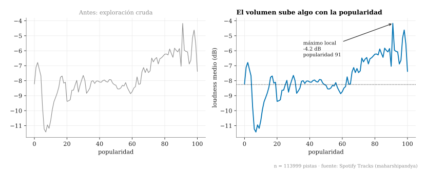
loudness media por nivel de popularidad, \(n=113\,999\) pistas— como gráfico exploratorio crudo (izquierda: gris, sin título) y de comunicación (derecha: titular-conclusión, línea resaltada, la referencia de la loudness media y el máximo local \(-4{,}2\) dB anotado, con tamaño de muestra y fuente al pie). Datos: catálogo musical; política de datos del cap. 10. Generada por src/cap12_visualizacion.py.Una honestidad de fondo recorre las cuatro decisiones, y conviene nombrarla porque cierra un arco del libro. El titular no exagera —el ascenso es real pero débil (\(r \approx 0{,}05\)), y el «sube algo» dice exactamente eso, ni una ley ni una casualidad—; la escala arranca donde debe (recuérdese el factor de mentira de §12.1); el pie no oculta ni el tamaño de la muestra ni la fuente. La honestidad gráfica es, en el fondo, la extensión visual de la honestidad numérica que el cap. 10 exigió a cada columna: un gráfico es un dato más, y como todo dato se gana su sitio explicando algo y declara su procedencia. El mismo perfil sobre otro catálogo —otra época, otro repertorio— podría contar una historia distinta, pero las cuatro decisiones serían las mismas, y el pie seguiría citando la fuente (maharshipandya 2022).
Un ejemplo integrador: la música en un panel
Cerramos como los capítulos vecinos, con un ejemplo que reúne lo aprendido; solo que aquí el ejemplo cierra además la Parte IV entera, así que lo hacemos con el instrumento que la corona: un panel de comunicación. La idea es reunir las técnicas del capítulo —la línea de §12.5, la distribución de §12.4, la comparación de cantidades, la función de distribución acumulada empírica— en una sola figura que responda, de un vistazo, cuatro preguntas distintas sobre la misma música. La figura 12.16, «la música en cuatro vistas», dispone las cuatro en una rejilla \(2\times2\): arriba a la izquierda, el perfil —la loudness media por nivel de popularidad y su suavizado—; arriba a la derecha, la forma —una caja por rasgo, danceability en torno a \(0{,}57\), energy a \(0{,}64\) y valence a \(0{,}47\)—; abajo a la izquierda, la comparación —la popularidad media por género, en barras ordenadas, con la mayor resaltada—; y abajo a la derecha, los percentiles —la ECDF de los tres rasgos, que deja leer cualquier cuantil en el eje—. Cada vista contesta una pregunta que las otras no pueden: cómo cambia con la popularidad, qué forma tiene, cómo se ordenan los grupos, qué fracción cae por debajo de un umbral.
Lo que convierte cuatro gráficos sueltos en un panel es la coherencia. Las cuatro vistas comparten la misma paleta Okabe-Ito y el mismo estilo de ejes —un solo módulo, cap12_estilo.py, aplicado a todas—, de modo que danceability es azul, energy naranja y valence verde en los dos cuadrantes que los comparan (la caja y la ECDF), y la mirada no tiene que reaprender el código de color al saltar de uno a otro. Es el principio de las small multiples de Tufte (Tufte 2001): repetir la misma estructura visual con distintos datos para que la comparación sea inmediata, porque el ojo ya no gasta esfuerzo en descifrar la forma. El armazón es un simple plt.subplots(2, 2), y cada eje del array recibe una vista:
import numpy as np
fig, axs = plt.subplots(2, 2, figsize=(8, 6)) # cuatro vistas
rasgos = ["danceability", "energy", "valence"]
colores = (estilo.AZUL, estilo.NARANJA, estilo.VERDE)
# (0,0) perfil: la loudness por popularidad y su referencia
axs[0, 0].plot(perfil.index, perfil.values, color=estilo.AZUL)
axs[0, 0].axhline(media, color=estilo.GRIS, linestyle="--")
# (0,1) forma: una caja por rasgo, misma paleta
axs[0, 1].boxplot([mus[r] for r in rasgos], tick_labels=rasgos)
# (1,0) comparacion: popularidad media por genero, ordenada
medias = (mus[mus["track_genre"].isin(punado)]
.groupby("track_genre")["popularity"].mean().sort_values())
axs[1, 0].barh(medias.index, medias.values, color=estilo.CIELO)
# (1,1) percentiles: la ECDF de cada rasgo
for r, c in zip(rasgos, colores):
x = np.sort(mus[r])
axs[1, 1].plot(x, np.arange(1, len(x) + 1) / len(x), color=c)
fig.tight_layout()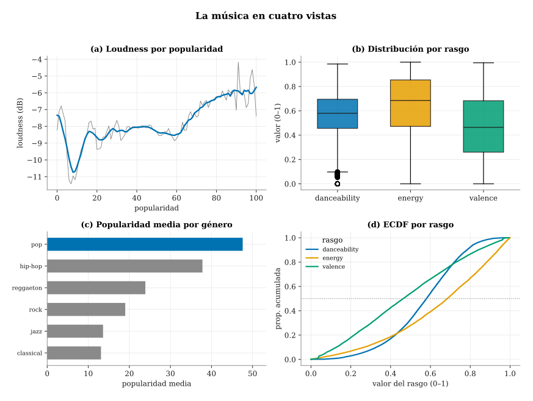
src/cap12_visualizacion.py.El panel dice también, sin ocultarlo, qué muestra y qué no. El perfil de loudness sube de verdad con la popularidad, aunque poco; los géneros se ordenan con claridad —el pop casi cuadruplica al clásico en popularidad media—; y las tres cajas tienen formas bien distintas. Lo que el panel deja ver, y conviene no olvidar, es la lección honesta de la §12.5: ninguna de estas vistas del sonido predice la popularidad de una pista concreta —el éxito es social—, y sin embargo cada género tiene su firma acústica, esa que un modelo aprovechará en el cap. 13. Con eso, el panel es la síntesis exacta de este bloque del libro sobre una sola pantalla: describir lo que el cap. 11 enseñó a resumir (§11.8), sobre el dato que el cap. 10 enseñó a limpiar (§10.8), y ver —por fin— lo que ninguno de los dos podía mostrar sin dibujarlo.
Y con esa síntesis se cierra el capítulo y la Parte IV. La visualización ha sido, a lo largo de estas páginas, el idioma común del análisis honesto: el mismo criterio que pedía declarar la procedencia de un número pide elegir la codificación que el ojo lee mejor, no truncar un eje y no dejar a nadie fuera; ver los datos no es el adorno final del análisis, sino su primera y su última herramienta. Queda un paso, y es el que abre la Parte V. Ahora que sabemos limpiar, resumir y ver los datos —mirarlos hasta entenderlos—, el cap. 13 les pedirá algo más: que predigan. Entraremos en el aprendizaje automático dando por sabido lo que este capítulo deja probado, que ningún modelo se cree sin antes verlo, y que sus aciertos y sus errores habrá también que dibujarlos.
Lecturas recomendadas
Tufte (2001) es el clásico de la honestidad y la economía gráfica: de él vienen la basura gráfica (chartjunk) y el factor de mentira que manejamos en la §12.1.2. Un libro para hojear despacio y al que volver cada vez que una figura pida un adorno.
Wilke (2019) es su heredero moderno, gratuito en línea: un catálogo razonado de qué gráfico conviene a cada tipo de dato, con buenos y malos ejemplos enfrentados. La mejor primera parada cuando se dude qué forma elegir.
Cleveland y McGill (1984) es la ciencia que hay detrás del criterio: el experimento que ordenó las codificaciones visuales por la precisión con que las lee el ojo y que sostiene, en la §12.1.1, nuestra preferencia por la posición y la longitud frente al ángulo y el área.
Okabe y Ito (2008) funda la accesibilidad del color: la paleta apta para daltónicos que adopta el libro y la idea de codificar dos veces —forma y color— para no dejar fuera a nadie. Breve y de aplicación inmediata.
VanderPlas (2023) es la práctica con el ecosistema: sus capítulos de
matplotliby compañía muestran, con código reproducible, cómo se llega de los datos a cada una de las figuras de este capítulo.Few (2009) lleva la visualización al análisis cuantitativo del día a día: cómo mirar tablas y series de trabajo para decidir, no para impresionar. Su defensa de la sobriedad —y su crítica a los dobles ejes— ha envejecido bien.
Y como referencia viva, ninguna sustituye a la documentación oficial: la de matplotlib (The Matplotlib Development Team 2026) —empezando por su guía «Choosing Colormaps»— y la de seaborn (Waskom y the seaborn contributors 2026) fijan el comportamiento exacto de cada función y se actualizan con cada versión.